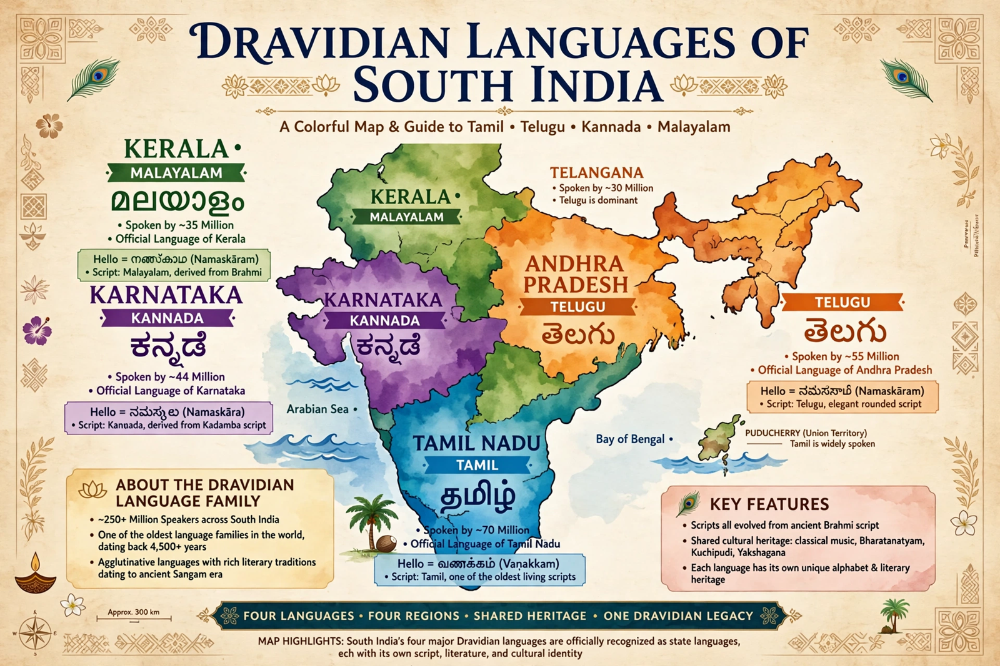

The Dravidian languages are a family of about 70 languages spoken by some 250 million people, mainly in southern India and parts of central India, Sri Lanka, Pakistan and the diaspora. The four major literary languages are Tamil, Telugu, Kannada and Malayalam, each an official language of an Indian state.

| Dravidian | |
|---|---|
| Region | South and central India, Sri Lanka |
| Speakers | ~250 million |
| Branches | South, South-Central, Central, North |
| Major languages | Telugu, Tamil, Kannada, Malayalam |
South Dravidian includes Tamil, Malayalam and Kannada; South-Central includes Telugu, the most widely spoken Dravidian language; Central includes Kolami and Parji; North includes Kurukh, Malto and Brahui — the outlier spoken in Balochistan, Pakistan. Tulu and Kodava are smaller southern languages.
Dravidian languages are agglutinative, use suffixes extensively, have retroflex consonants, a distinction between inclusive and exclusive 'we' in many languages, and SOV word order. They have interacted for millennia with Indo-Aryan languages such as Sanskrit, sharing vocabulary and areal features.
Tamil has the oldest literature, with Sangam texts over 2,000 years old. Scholars have hypothesised links to the Indus Valley civilisation and to Elamite (the Elamo-Dravidian hypothesis), neither proven. Robert Caldwell's 1856 comparative grammar established the family.